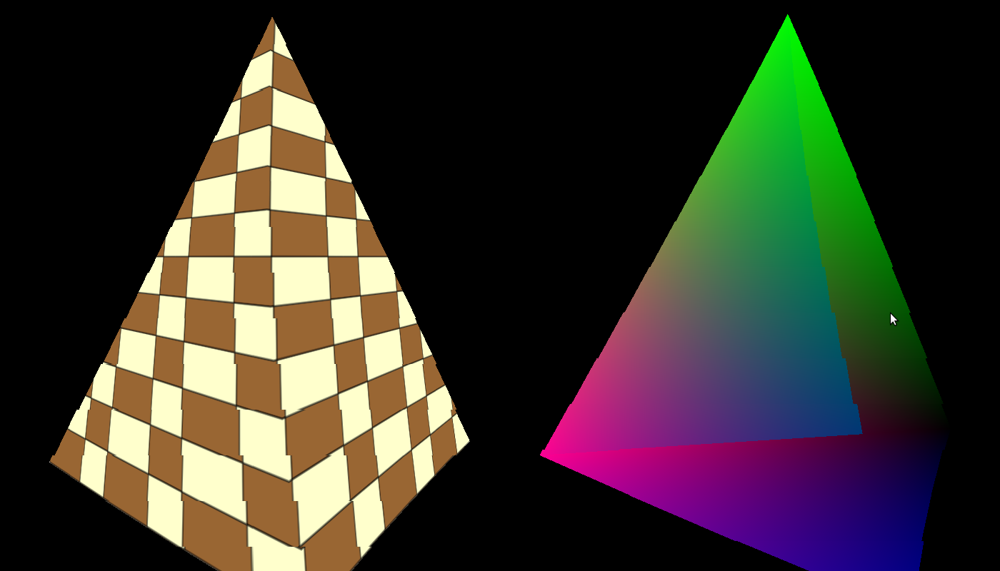
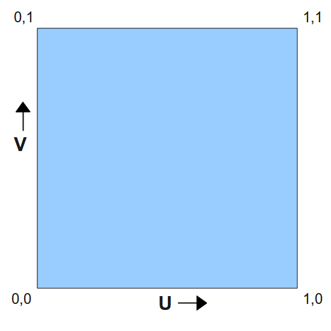
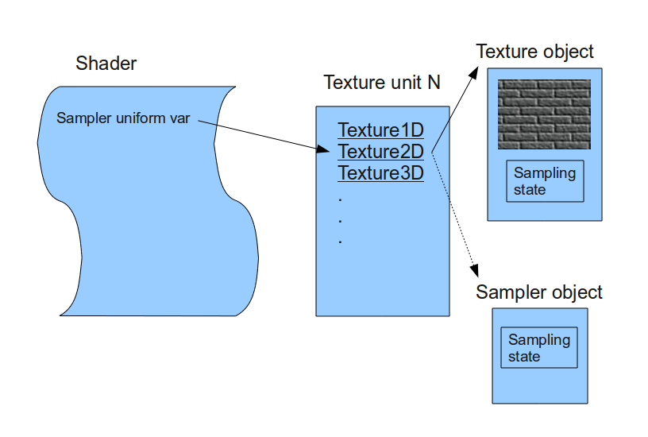

Background
Texture mapping means applying any type of picture on one or more faces of a 3D model. The picture (a.k.a 'texture') can be anything but is often a pattern such as bricks, foliage, barren land, etc, that adds realism to the scene. For example, compare the following images:
To get texture mapping working you need to do three things: load a texture into OpenGL, supply texture coordinates with the vertices (to map the texture to them) and perform a sampling operation from the texture using the texture coordinates in order to get the pixel color. Since a triangle is scaled, rotated, translated and finally projected it can land on the screen in numerous ways and look very different depending on its orientation to the camera. What the GPU needs to do is make the texture follow the movement of the vertices of the triangle so that it will look real (if the texture appear to "swim" across the triangle it will not). To do this the developer supplies a set of coordinates known as 'texture coordinates' to each vertex. As the GPU rasterizes the triangle it interpolates the texture coordinates across the triangle face and in the fragment shader the developer maps these coordindates to the texture. This action is known as 'sampling' and the result of sampling is a texel (a pixel in a texture). The texel often contains a color which is used to paint the corresponding pixel on the screen. In the coming tutorials we will see that the texel can contain different types of data that can be used for multiple effects.
OpenGL supports several types of textures such as 1D, 2D, 3D, cube, etc that can be used for different techniques. Let's stick with 2D textures for now. A 2D texture has a width and height that can be any number within the limitations of the spec. Multiplying the width by height tells you the number of texels in the texture. How do you specify the texture coordinates of a vertex? - No, it is not the coordinate of a texel inside the texture. That would be too limiting because replacing a texture with one that has different width/height means that we will need to update the texture coordinates of all the vertices to match the new texture. The ideal scenario is to be able to change textures without changing texture coordinates. Therefore, texture coordinates are specified in 'texture space' which is simply the normalized range [0,1]. This means that the texture coordinate is usually a fraction and by multiplying that fraction with the corresponding width/height of a texture we get the coordinate of the texel in the texture. For example, if the texture coordinate is [0.5,0.1] and the texture has a width of 320 and a height of 200 the texel location will be (160,20) (0.5 * 320 = 160 and 0.1 * 200 = 20).
The usual convention is to use U and V as the axis of the texture space where U corresponds to X in the 2D cartesian coordinate system and V corresponds to Y. OpenGL treats the values of the UV axes as going from left to right on the U axis and down to up on the V axis. Take a look at the following image:
This image presents the texture space and you can see the origin of that space in the bottom left corner. U grows towards the right and V grows up. Now consider a triangle whose texture coordinates are specified in the following picture:

Let's say that we apply a texture such that when using these texture coordinates we get the picture of the small house in the location above. Now the triangle goes through various transformations and when the time comes to rasterize it it looks like this:

As you can see, the texture coordinates "stick" to the vertices as they are a core attributes and they don't change under the transformations. When interpolating the texture coordinates most pixels get the same texture coordinates as in the original picture (because they remained in the same place relative to the vertices) and since the triangle was flipped so is the texture which is applied to it. This means that as the original triangle is rotated, stretched or squeezed the texture diligently follows it. Note that there are also techniques that change the texture coordinates in order to move texture across the triangle face in some controlled way but for now our coordinates will stay the same.
Another important concept associated with texture mapping is 'filtering'. We've discussed how to map a texture coordinate to a texel. The texel location in the texture is always specified in whole numbers, but what happens if our texture coordinates (remember - this is a fraction between 0 and 1) maps us to a texel at (152.34,745.14)? The trivial answer is to round this down to (152,745). Well, this works and provides adequate results but in some cases won't look very good. A better approach is to get the 2 by 2 quad of texels ( (152,745), (153,745), (152,744) and (153,744) ) and do some linear interpolation between their colors. This linear interpolation must reflect the relative distance between (152.34,745.14) and each one of the texels. The closest the coordinate is to a texel the greater influence it gets on the end result and the further it is the less influence it gets. This looks much better than the original approach.
The method by which the final texel value is selected is known as 'filtering'. The simple approach of rounding the texture location is known as 'nearest filtering' and the more complex approach that we saw is called 'linear filtering'. Another name for nearest filtering you may come across is 'point filtering'. OpenGL supports several types of filters and you have the option to choose. Usually the filters that provide better results demand greater compute power from the GPU and may have an effect on the frame rate. Choosing the filter type is a matter of balancing between the desired result and the capability of the target platform.
Now that we understand the concept of texture coordinates it is time to take a look at the way texture mapping is done in OpenGL. Texturing in OpenGL means manipulating the intricate connections between four concepts: the texture object, the texture unit, the sampler object and the sampler uniform in the shader.
The texture object contains the data of the texture image itself, i.e., the texels. The texture can be of different types (1D, 2D, etc) with different dimensions and the underlying data type can have multiple formats (RGB, RGBA, etc). OpenGL provides a way to specify the starting point of the source data in memory and all the above attributes and load the data into the GPU. There are also multiple parameters that you can control such as the filter type, etc. In a very similar way to vertex buffer objects the texture object is associated with a handle. After creating the handle and loading the texture data and parameters you can simply switch textures on the fly by binding different handles into the OpenGL state. You no longer need to load the data again. From now on it is the job of the OpenGL driver to make sure the data is loaded in time to the GPU before rendering starts.
The texture object is not bound directly into the shader (where the actual sampling takes place). Instead, it is bound to a 'texture unit' whose index is passed to the shader. So the shader reaches the texture object by going through the texture unit. There are usually multiple texture units available and the exact number depends on the capability of your graphis card. In order to bind a texture object A to a texture unit 0 you first need to make texture unit 0 active and then bind texture object A. You can now make texture unit 1 active and bind a different (or even the same) texture object to it. Texture unit 0 remains bound to texture object A.
There is a bit of complexity in the fact that each texture unit actually has a place for several texture objects simultaneously, as long as the textures are of different types. This is called the 'target' of the texture object. When you bind a texture object to a texture unit you specify the target (1D, 2D, etc). So you can have texture object A bound to the 1D target while object B is bound to the 2D target of the same texture unit.
The sampling operation (usually) takes place inside the fragment shader and there is a special function that does it. The sampling function needs to know the texture unit to access because you can sample from multiple texture unit in the fragment shader. There is a group of special uniform variables for that, according to the texture target: 'sampler1D', 'sampler2D', 'sampler3D', 'samplerCube', etc. You can create as many sampler uniform variables as you want and assign the value of a texture unit to each one from the application. Whenever you call a sampling function on a sampler uniform variable the corresponding texture unit (and texture object) will be used.
The final concept is the sampler object. Don't confuse it with the sampler uniform variable! These are seperate entities. The thing is that the texture object contains both the texture data as well as parameters that configure the sampling operation. These parameters are part of the sampling state. However, you can also create a sampler object, configure it with a sampling state and bind it to the texture unit. When you do that the sampler object will override any sampling state defined in the texture object. Don't worry - for now we won't be using sampler objects at all but it is good to know that they exist.
The following diagram summarizes the relationships between the texturing concepts that we just learned:
Source walkthru
OpenGL knows how to load texture data in different formats from a memory location but does not provide any means for loading the texture into memory from image files such as PNG and JPG. We are going to use an external library for that. There are many options in that department and we're going to use ImageMagick, a free software library that supports many image types and is portable across several operating systems. See the instructions for more info on installing it.
Most of the handling of the texture is encapsulated in the following class:
(ogldev_texture.h:27)
class Texture
{
public:
Texture(GLenum TextureTarget, const std::string& FileName);
bool Load();
void Bind(GLenum TextureUnit);
};
When creating a Texture object you will need to specify a target (we use GL_TEXTURE_2D) and file name. After that you call the Load() function. This can fail, for example, if the file does not exist or if ImageMagick encountered any other error. When you want to use a specific Texture instance you need to bind it to one of the texture units.
(ogldev_texture.cpp:31)
try {
m_pImage = new Magick::Image(m_fileName);
m_pImage->write(&m_blob, "RGBA");
}
catch (Magick::Error& Error) {
std::cout << "Error loading texture '" << m_fileName << "': " << Error.what() << std::endl;
return false;
}
This is how we use ImageMagick to load the texture from file and prepare it in memory to be loaded into OpenGL. We start by instantiating a class member with the type Magic::Image using the texture file name. This call loads the texture into a memory representation which is private to ImageMagick and cannot be used directly by OpenGL. Next we write the image into a Magick::Blob object using the RGBA (red, green, blue and alpha channels) format. The BLOB (Binary Large Object) is a useful mechanism for storing an encoded image in memory in a way that it can be used by external programs. If there is any error an exception will be thrown so we need to be prepared for it.
(ogldev_texture.cpp:40)
glGenTextures(1, &m_textureObj);
This OpenGL function is very similar to glGenBuffers() that we are already familiar with. It generates the specified number of texture objects and places their handles in the GLuint array pointer (the second parameter). In our case we only need one object.
(ogldev_texture.cpp:41)
glBindTexture(m_textureTarget, m_textureObj);
We are going to make several texture related calls and in a similar fashion to what with did with vertex buffers, OpenGL needs to know on what texture object to operate. This is the purpose of the glBindTexture() function. It tells OpenGL the texture object we refer to in all the following texture related calls, until a new texture object is bound. In addition to the handle (the second object) we also specify the texture target that can be GL_TEXTURE_1D, GL_TEXTURE_2D, etc. There can be a different texture object bound to each one of the targets simultaneously. In our implementation the target is passed as part of the constructor (and for now we are using GL_TEXTURE_2D).
(ogldev_texture.cpp:42)
glTexImage2D(m_textureTarget, 0, GL_RGBA, m_pImage->columns(), m_pImage->rows(), 0, GL_RGBA, GL_UNSIGNED_BYTE, m_blob.data());
This rather complex function is used to load the main part of the texture object, that is, the texture data itself. There are several glTexImage* function available and each one covers a few texture targets. The texture target is always the first parameter. The second parameter is the LOD, or Level-Of-Detail. A texture object can contain the same texture in different resolutions, a concept known as mip-mapping. Each mip-map has a different LOD index, starting from 0 for the highest resolution and growing as resolution decreases. For now, we have only a single mip-map so we pass zero.
The next parameter is the internal format in which OpenGL stores the texture. For example, you can pass a texture with the full four color channel (red, green, blue and alpha) but if you specify GL_RED you will get a texture with only the red channel, which looks kinda, well..., red (try it!). We use GL_RGBA to get the full texture color correctly. The next two parameters are the width and height of the texture in texels. ImageMagick conveniently stores this information for us when it loads the image and we get it using the Image::columns()/rows() functions. The fifth parameter is the border, which we leave as zero for now.
The last three parameters specify the source of the incoming texture data. The parameters are format, type and memory address. The format tells us the number of channels and needs to match the BLOB that we have in memory. The type describes the core data type that we have per channel. OpenGL supports many data types but in the ImageMagick BLOB we have one byte per channel so we use GL_UNSIGNED_BYTE. Finally comes the memory address of the actual data which we extract from the BLOB using the Blob::data() function.
(ogldev_texture.cpp:43)
glTexParameterf(m_textureTarget, GL_TEXTURE_MIN_FILTER, GL_LINEAR);
glTexParameterf(m_textureTarget, GL_TEXTURE_MAG_FILTER, GL_LINEAR);
The general function glTexParameterf control many aspects of the texture sampling operation. These aspects are part of the texture sampling state. Here we specify the filter to be used for magnification and minification. Every texture has a given width and height dimensions but rarely it is applied to a triangle of the same proportion. In most case the triangle is either smaller or larger than the texture. In this case the filter type determines how to handle the case of magnifying or minifying the texture to match the proportion of the triangle. When the rasterized triangle is larger than the texture (e.g. it is very close to the camera) we may have several pixels covered by the same texel (magnification). When it is smaller (e.g. very far from the camera) several texels are covered by the same pixel (minification). Here we select the linear interpolation filter type for both cases. As we've seen earlier, linear interpolation provides good looking results by mixing the colors of a 2x2 texel quad based on the proximity of the actual texel location (calculated by scaling the texture coordinates by the texture dimensions).
(ogldev_texture.cpp:49)
void Texture::Bind(GLenum TextureUnit)
{
glActiveTexture(TextureUnit);
glBindTexture(m_textureTarget, m_textureObj);
}
As our 3D applications grow more complex, we may be using many different textures in many draw calls in the render loop. Before each draw call is made we need to bind the texture object we want to one of the texture units so that it will be sampled from in the fragment shader. This function takes the texture unit enum (GL_TEXTURE0, GL_TEXTURE1, etc) as a parameter. It makes it active using glActiveTexture() and then binds the texture object to it. This object will remain bound to this texture unit until the next call to Texture::Bind() is made with the same texture unit.
(shader.vs)
#version 330
layout (location = 0) in vec3 Position;
layout (location = 1) in vec2 TexCoord;
uniform mat4 gWVP;
out vec2 TexCoord0;
void main()
{
gl_Position = gWVP * vec4(Position, 1.0);
TexCoord0 = TexCoord;
};
This is the updated vertex shader. There is an additional input parameter called TexCoord which is a 2D vector. Instead of outputing the color this shader passes the texture coordinates from the vertex buffer down to the fragment shader untouched. The rasterizer will interpolate the texture coordinates across the triangle face and each fragment shader will be invoked with its own specific texture coordinates.
(shader.fs)
in vec2 TexCoord0;
out vec4 FragColor;
uniform sampler2D gSampler;
void main()
{
FragColor = texture2D(gSampler, TexCoord0.st);
};
And this is the updated fragment shader. It has an input variable called TexCoord0 which contains the interpolated texture coordinates we got from the vertex shader. There is a new uniform variable called gSampler that has the sampler2D type. This is an example of a sampler uniform variable. The application must set the value of the texture unit into this variable so that the fragment shader will be able to access the texture. The main function does one thing - it uses the internal texture2D function to sample the texture. The first parameter is the sampler uniform variable and the second is the texture coordinates. The returned value is the sampled texel (which in our case contains color) after having gone through filtering. This is the final color of the pixel in this tutorial. In the coming tutorials we will see that lighting simply scales that color based on the lighting parameters.
(tutorial16.cpp:128)
Vertex Vertices[4] = {
Vertex(Vector3f(-1.0f, -1.0f, 0.5773f), Vector2f(0.0f, 0.0f)),
Vertex(Vector3f(0.0f, -1.0f, -1.15475), Vector2f(0.5f, 0.0f)),
Vertex(Vector3f(1.0f, -1.0f, 0.5773f), Vector2f(1.0f, 0.0f)),
Vertex(Vector3f(0.0f, 1.0f, 0.0f), Vector2f(0.5f, 1.0f)) };
Up until this tutorial our vertex buffer was simply a consecutive list of Vector3f structures that contained the position. Now we have the 'Vertex' structure that contains the position as well as the texture coordinates as a Vector2f.
(tutorial16.cpp:80)
...
glEnableVertexAttribArray(1);
...
glVertexAttribPointer(0, 3, GL_FLOAT, GL_FALSE, sizeof(Vertex), 0);
glVertexAttribPointer(1, 2, GL_FLOAT, GL_FALSE, sizeof(Vertex), (const GLvoid*)12);
...
pTexture->Bind(GL_TEXTURE0);
...
glDisableVertexAttribArray(1);
These are the changes and additions to the render loop. We start by enabling vertex attribute 1 for the texture coordinates, in addition to attribute 0 which is already enabled for the position. This corresponds to the layout statement in the vertex shader. Next we call glVertexAttribPointer to specify the location of the texture coordinates in the vertex buffer. The texture coordinate is composed of 2 floating point values which corresponds to the second and third paramaters. Note the fifth parameter. This is the size of the vertex structure and is specified for both the position and the texture coordinates. This parameter is known as the 'vertex stride' and tells OpenGL the number of bytes between the start of the attribute in a vertex and the start of the same attribute in the next vertex. In our case the buffer contains: pos0, texture coords0, pos1, texture coords1, etc. In the previous tutorials we only had position so it was ok to set it to either zero or sizeof(Vector3f). Now that we have more than one attribute the stride can only be the number of bytes in the Vertex structure. The last parameter is the offset in bytes from the start of the Vertex structure to the texture attributes. We have to do the casting to GLvoid* because that's how the function expects to get the offset.
Before the draw call we have to bind the texture we want to use to the texture unit. We only have one texture here so any texture unit would do fine. We only need to make sure the same texture unit is set into the shader (see below). After the draw call we disable the attribute.
(tutorial16.cpp:253)
glFrontFace(GL_CW);
glCullFace(GL_BACK);
glEnable(GL_CULL_FACE);
These OpenGL calls are not really related to texturing, I just added it to make it look better (try disabling...). They enable back face culling, a common optimization used to drop triangles before the heavy process of rasterization. The motivation here is that often 50% of the surface of an object is hidden from us (the back of a person, house, car, etc). The glFrontFace() function tells OpenGL that vertices in a triangle are specifed in clockwise order. That is, when you look at the front face of the triangle, you will find the vertices in the vertex buffer in clockwise order. The glCullFace() tells the GPU to cull the back of a triangle. This means that the "inside" of an object doesn't need to be rendered, only the external part. Finally, back face culling itself is enabled (by default it is disabled). Note that in this tutorial I reversed the order of the indices of the bottom triangle. The way that it was before made the triangle appear as if it was facing the inside of the pyramid (see line 170 in tutorial16.cpp).